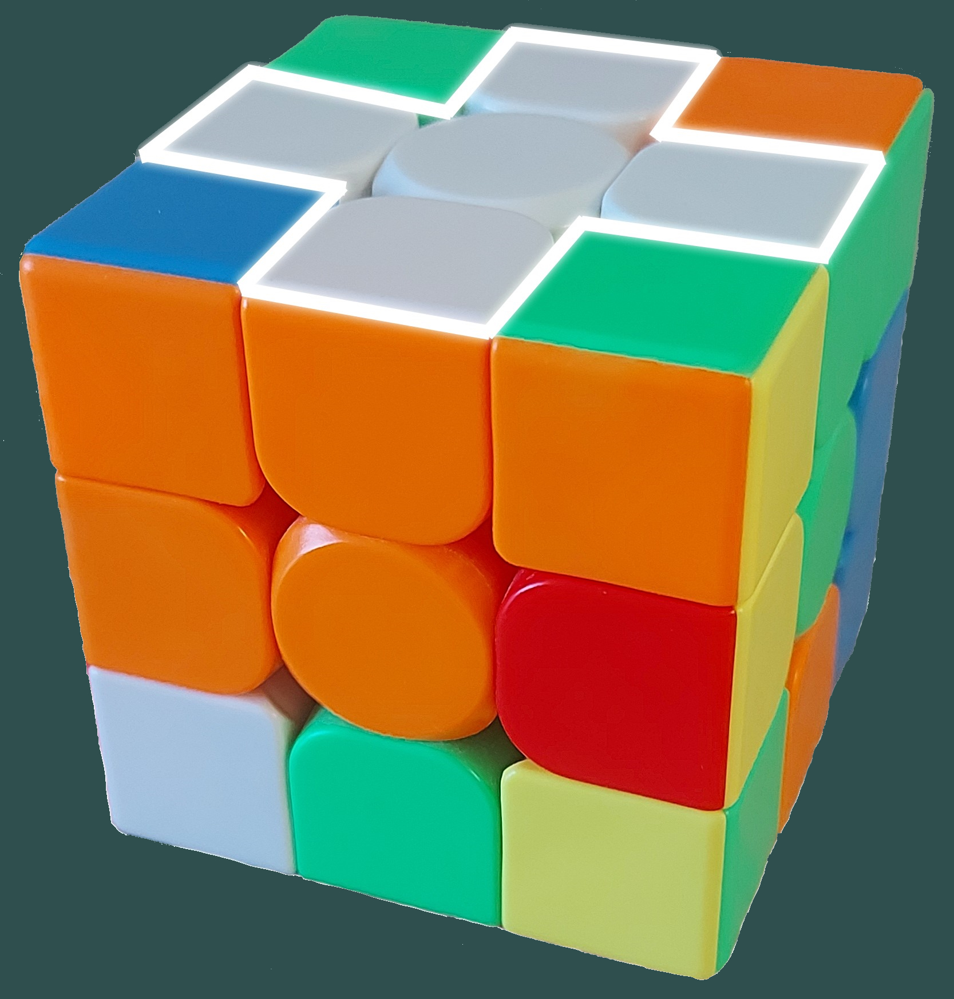
Wit Kruis
De eerste stap is het wit kruis maken. Zorg ervoor dat het middelste witte blokje
zich aan de bovenkant bevind. Daarna zal je de zijkanten van het kruis moeten zoeken
en ze naast het middelste witte blokje zetten. wat zeer belangerijk is, is dat de zijkanten
van het witte blokje de zelvde kleur hebben als het middelste blokje van de zijkanten.
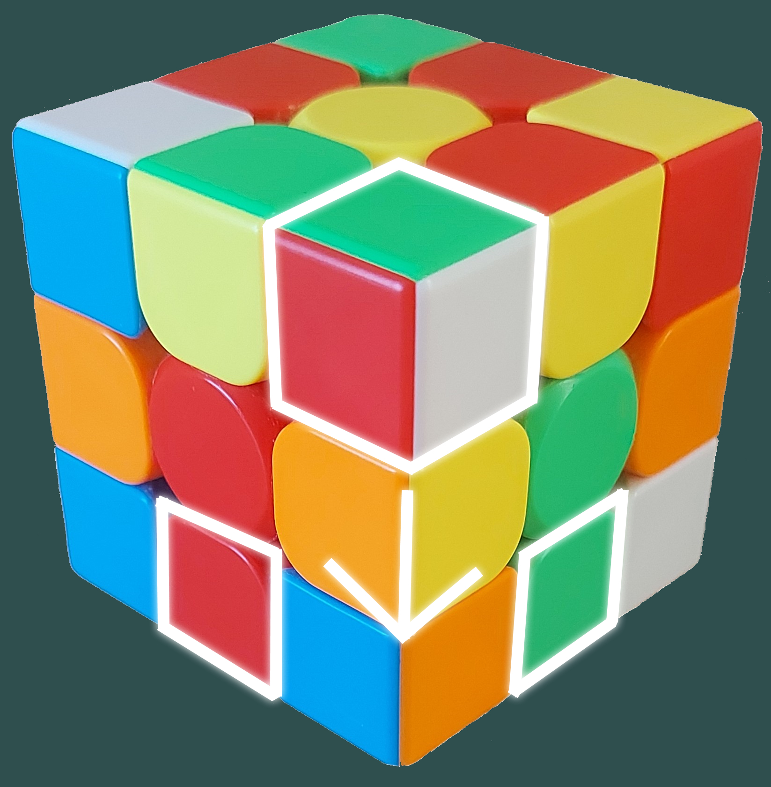
Hoek 1
De tweede stap is de hoeken op de juiste plek krijgen.
Als eerste draai je je kubus om zodat het middelste blokje geel is.
Daarna zoek je een blokje met 1 witte zijkant, en plaats je deze boven
een hoek met de juiste kleuren (zie foto). Er zijn 5 verschillende mogelijkheden.
Als je deze hoek hebt dan hou je het blokje dat je
wil verplaatsen rechts boven en doe je het rechter
algoritme
1 keer:
R U R' U'
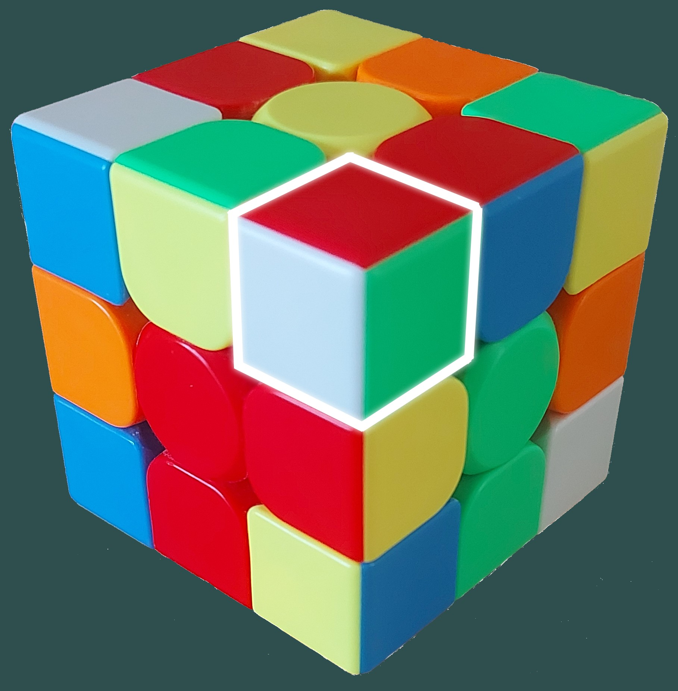
Hoek 2
Bij deze hoek is het blokje omgedraaid. Om deze op te lossen moet je je volledige
kubus naar links draaien zodat het witte vlakje links van je zit. daarna doe je
het linker
algoritme
1 keer:
L' U' L U
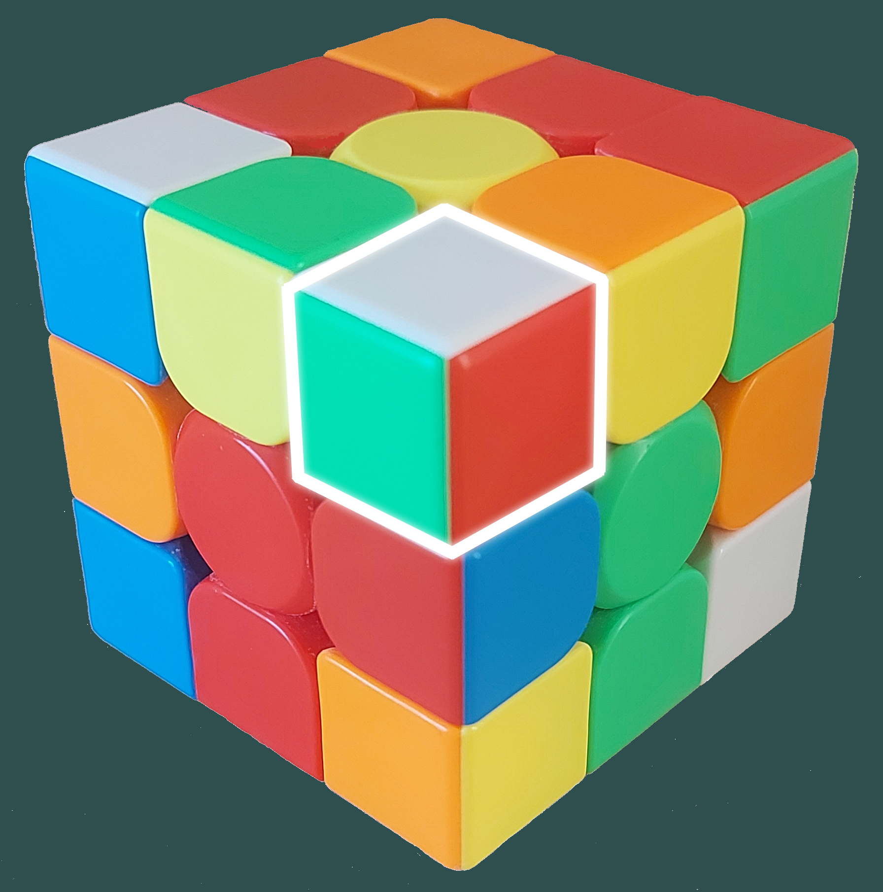
Hoek 3
Bij deze hoek zit de witte kant naar boven. Dit is bijna precies hetzelvde als de vorige
hoek, wat je eerst doet is hem eerst omdraaien en daarna het rechter
algoritme
doen.
je zorgt ervoor dat het blokje met de witte kant in de rechterbovenkant is en dan doe je:
R U U R' U' R U R'

Hoek 4
Bij deze hoek zit het blokje al op de juiste plaats, maar is niet goed gedraait. dus we zullen
deze er uit moeten halen en opnieuw in steken met de juiste rotatie.
als het witte vlak zoals op de foto zit, dan doe je 2 keer het rechter
algoritme:
R U R' U' x2
als het witte vlak aan de linker kant zit draai je je volledige kubus naar links
zodat het witte vlak links zit, daarna doe je het linker
algoritme
2 keer.
L' U' L U x2
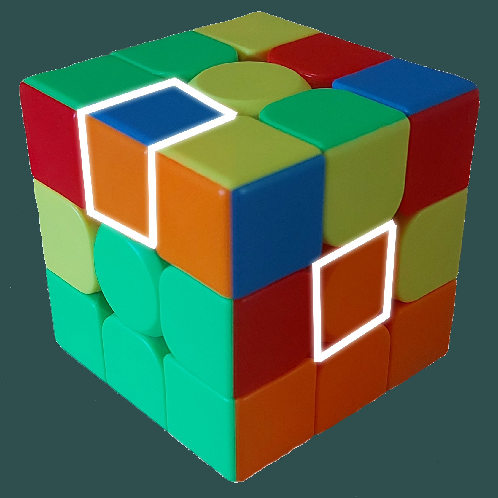
1
Voor de hoeken in de tweede laag te krijgen moet je goed kijken naar de kleuren.
bij de foto zie jeeen blokje met blauw en oranje, als je naar dit voorbeeld
kijkt moet je het oranje blokje links van het oranje midden houden, en de blauwe
bovenkant aan de andere kant van het blauwe midden houden.dus de bovenkant
(in dit geval blauw) moet aan de andere kant van het blauwe midden.
als je het blokje aan de juist kant hebt gezet doe je in dit geval,
(als het blokje links is van waar hij moet staan is) dan hou je de
oranje kant voor je en doe je het volgende
algoritme:
R U R' U' Daarna draai je je kubus naar rechts, en doe je: L' U' L
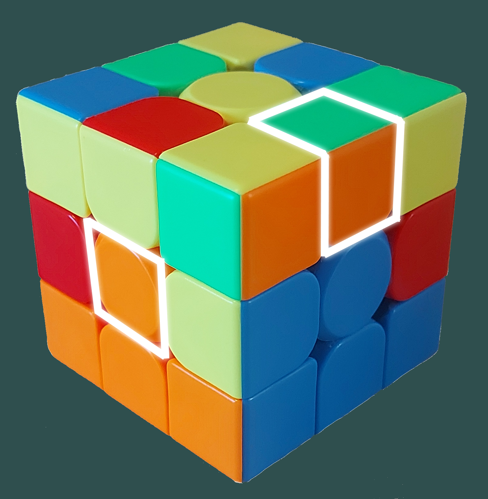
2
als het blokje rechts zit van (in dit geval) oranje midden doe je precies
hetzelvde maar omgekeerd. volg het volgende
algoritme:
L' U' L U dan draaje je je kubus naar rechts zodat het
vlak waar je net naar keek rechts zit en dan doe je:
R U R'
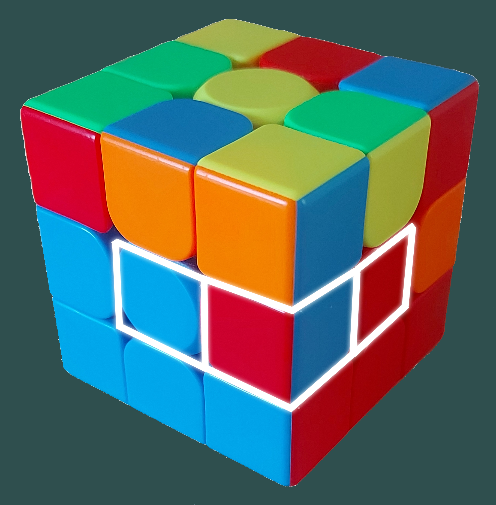
3
Bij de laatste zit het blokje al op de juiste plek, maar is hij niet goed gedraait.
Stap 1 is hem er uit doen, dat doe je met dit
algoritme:
R U R' U' Draai hierna je kubus naar rechts en doe dit algoritme:
L' U' L Hierna draai je je kubus weer naar links, en doe je het algoritme nog 1 keer.
dus: R U R' U' draai je kubus naar rechts en L' U' L

Geel Kruis 1
Voor de 3e Laag moet je beginnen met een geel kruis te maken. Je kan geluk hebben en
al een geel kruis hebben, dan kan je deze stappen overslaan. Er zijn 3 mogelijkheden,
een hoek, een punt, of een streep.
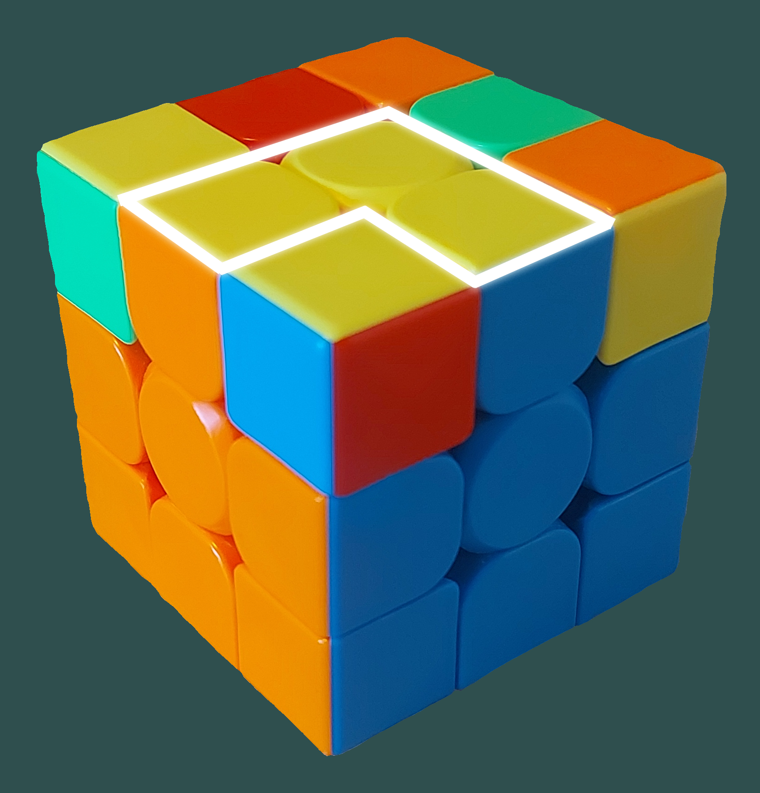
Geel Kruis 2
Als je een hoek hebt zoals op de foto, dan hou je de hoek rechts zodat één kant van de
hoek aan jou kant is, en één rechts is. Dan hou je de achterste laag vast en draai
je de 2 voorste lagen naar rechts. Dan doe je het rechter
algoritme:
R U R' U'
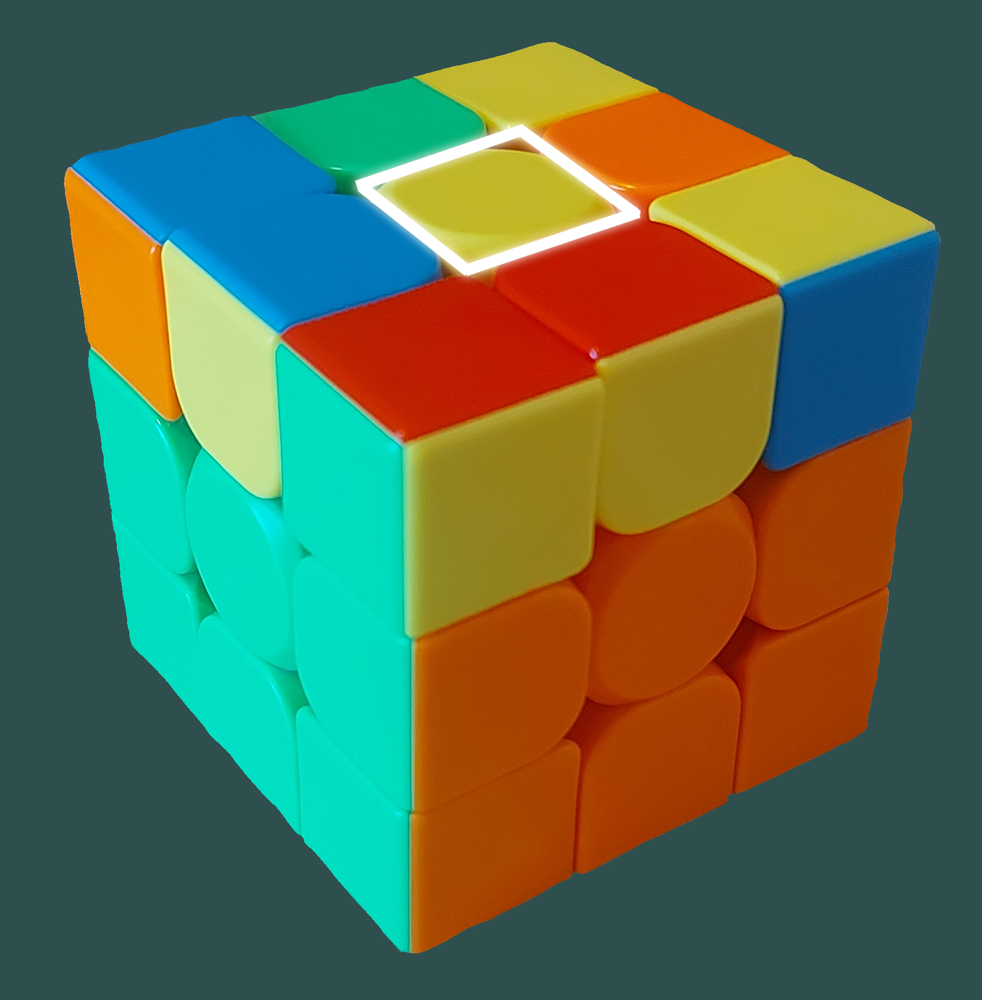
Geel Kruis 3
Als je alleen een geel midden hebt dan hou je de achterste laag vast, draai je de eerste
2 lagen naar rechts. Daarna kies je een willekeurige kant en doe je het rechter
algoritme:
R U R' U'
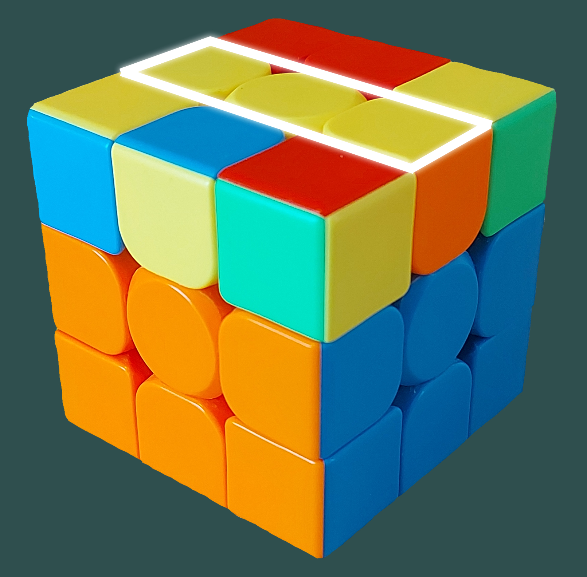
Geel Kruis 4
Als je een Streep hebt, hou je de streep horiozontaal (zoals op de foto), daarna
hou je de achterste 2 lagen vast, en draai je de eerste laag naar rechts en dan
doe je als laatste het rechter
R U R' U'
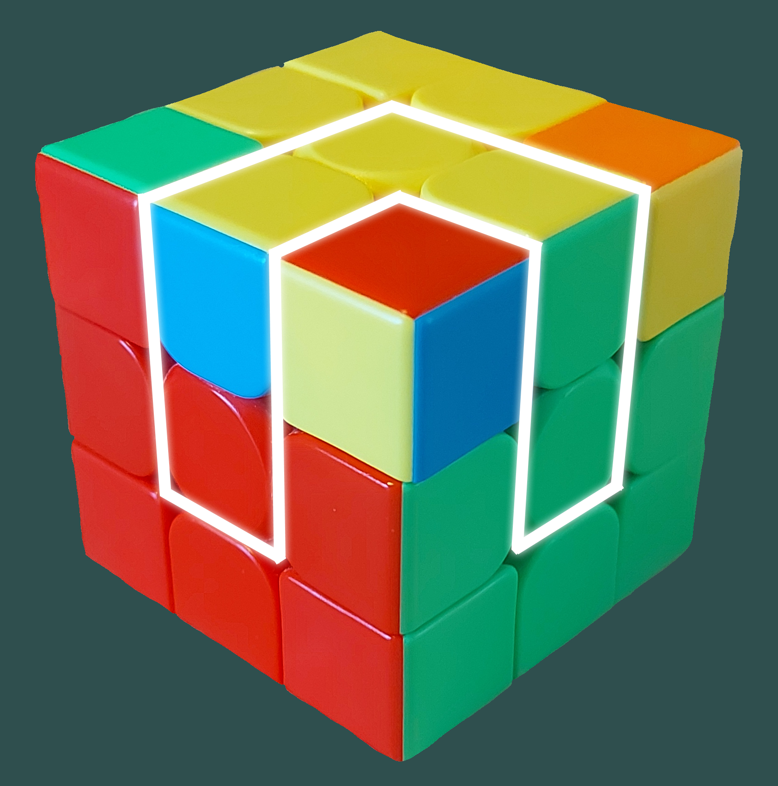
Zijkant Geel Kruis
Nu dat je het geel kruis hebt, moet je de zijkanten van het kruis gelijk maken met het
kleur die er onder zit. De eerste stap is om je kruis rond te draaien tot er 2 kleuren
goed zitten. Als dit is gelukt zijn er 3 mogelijkheden:
1. Alle keuren zitten goed, Als je dit hebt sla je de volgende stappen over.
2. 2 kleuren zitten goed, deze zitten over elkaar, als je dit hebt doe je het volgende
algoritme:
R U R' U R U' U' R'
3. 2 kleuren zitten goed, deze zitten naast elkaar, als je dit hebt dan hou je 1 juist
kleur voor je, en één rechts van jou, dan doe je het volgende
algoritme:
R U R' U R U' U' R'
De volgende stap is om de hoeken op de juiste plek te krijgen, zoals je kan zien op de ene foto,
de kleuren zijn goed, hij is alleen niet goed gedraait. Er zijn weer 3 mogelijkheden:
1. Alle blokjes zitten goed, dan kan je deze stap overslaan.
2. 1 blokje zit goed, dan zorg je ervoor dat deze rechts vooraan
zit en doe je het volgende
algoritme:
U R U' R' U R' U' R'
3. 0 blokjes zitten goed, dan doe je het volgende
algoritme
van een kant naar keuze:
U R U' R' U R' U' R'
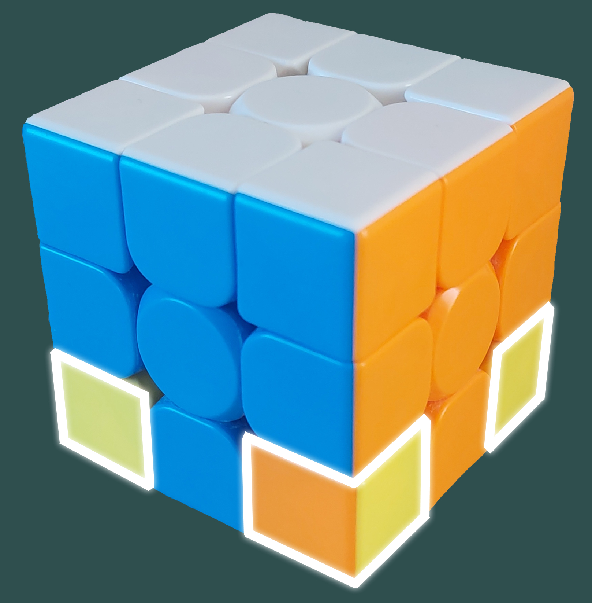
Laatste Stap
De laatste stap naar succes is om de blokjes om te draaien.
Eerst en vooral draai je je kubus weer om zodat wit aan de bovenkant zit.
Daarna zorg je ervoor dat een blokje die nog gedraait moet worden rechts onderaan
zit. Dan doe je het rechter
algoritme
tot het blokje goed gedraait is, je moet dit meestal
2 of 4 keer doen. Als het blokje goed gedraait is draai je de onderste laag naar
links of rechts tot je een blokje tegen komt die nog niet goed gedraait is en
doe je weeral het rechter
algoritme.
dit doe je tot de kubus gemaakt is.
Einde
Dit is hoe je de rubiks cube maakt!